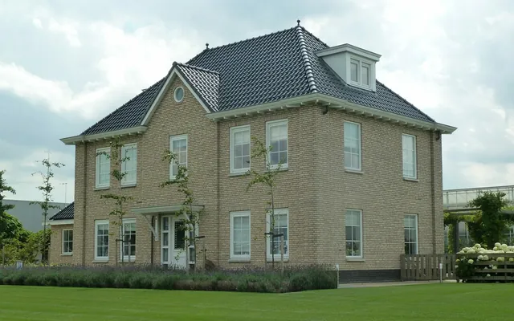
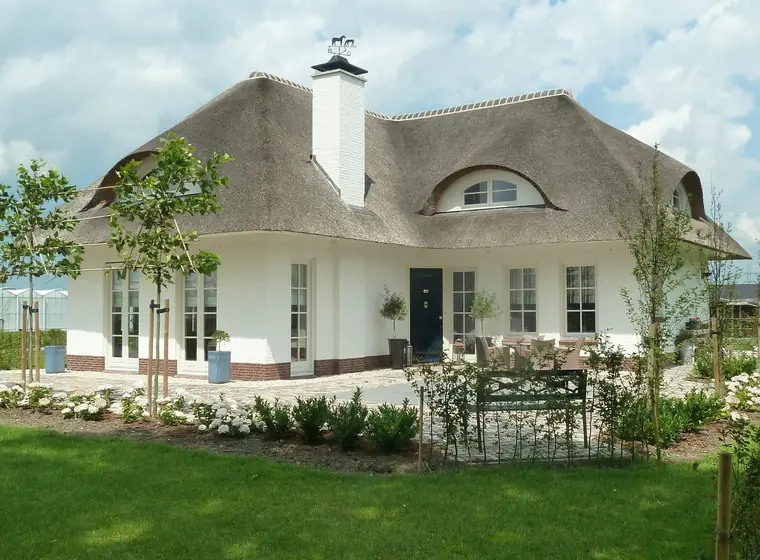
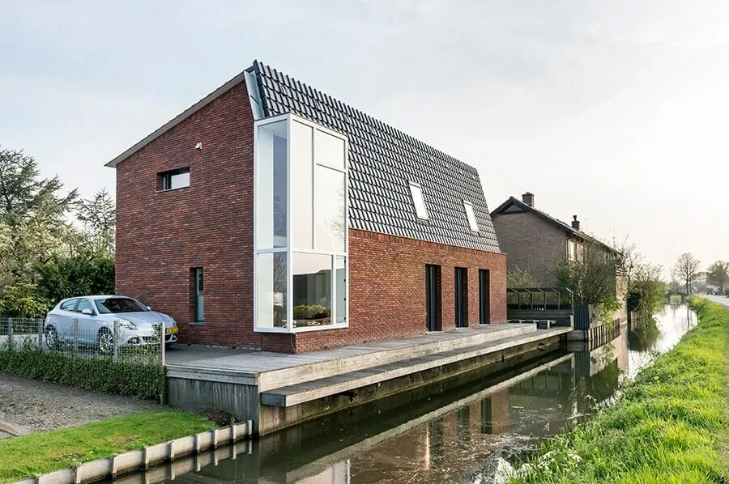
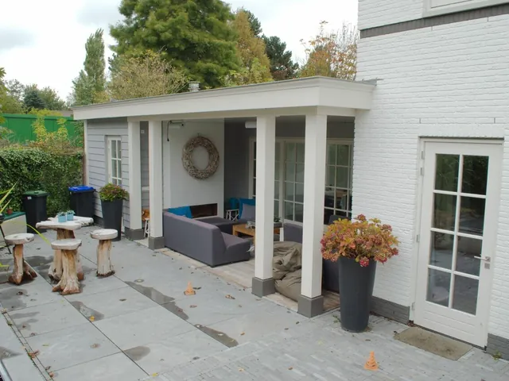
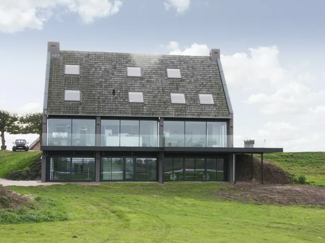
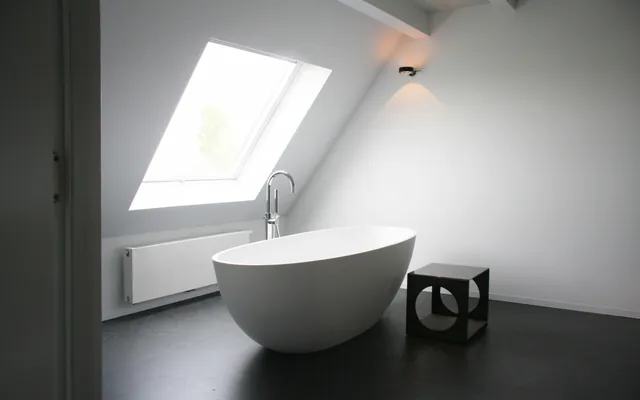

Bouwen en uitbreiden
Nieuwbouw van woningen en bedrijfspanden, een aanbouw tegen het huis of een dakkapel passend bij uw woning.

Nieuwbouw · aanbouw · verbouw · onderhoud
Een familiebedrijf in de gemeente Lopik, met kleine en grote nieuwbouw- en verbouwprojecten in het portfolio: van een dakkapel met kast op maat tot een overdekte rijhal met stallen.
Eigen foto's van de eigen site, met de woorden die Bergstra er zelf bij schreef.






Vijf diensten in twee groepen, voor woningen en bedrijfspanden.

Nieuwbouw van woningen en bedrijfspanden, een aanbouw tegen het huis of een dakkapel passend bij uw woning.

Verbouw en onderhoud van woningen en bedrijfspanden, en energieberekeningen met advies op maat.
"Doorbraak, badkamer en vernieuwing van elektra en leidingwerk laten doen bij onze nieuwe (voor ons) woning. Netjes afgehandeld en altijd bereikbaar voor vragen en opmerkingen. Personeel is netjes en vriendelijk."
"Zeer goede aannemer. Levert uitstekend werk af tegen redelijke prijzen."
Beschrijf uw plan in het formulier, of bel 0348 551 329.